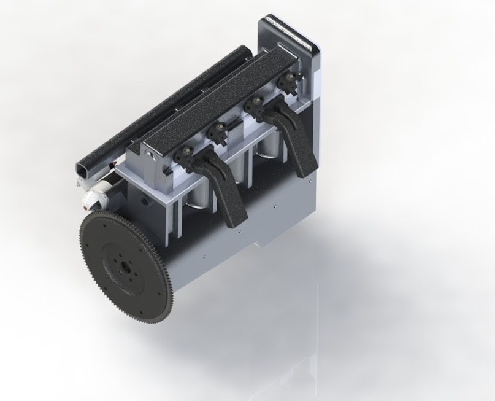
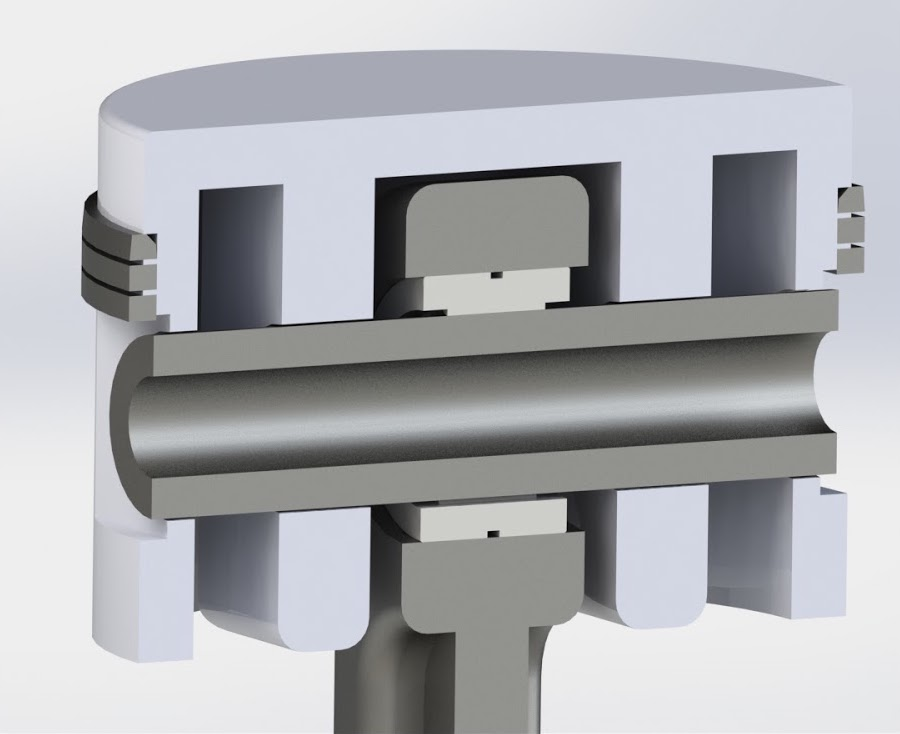
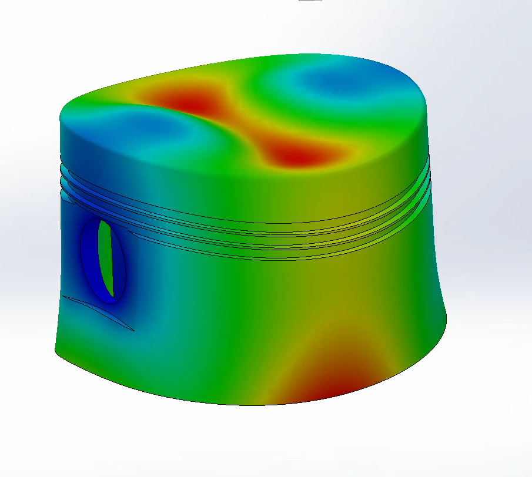
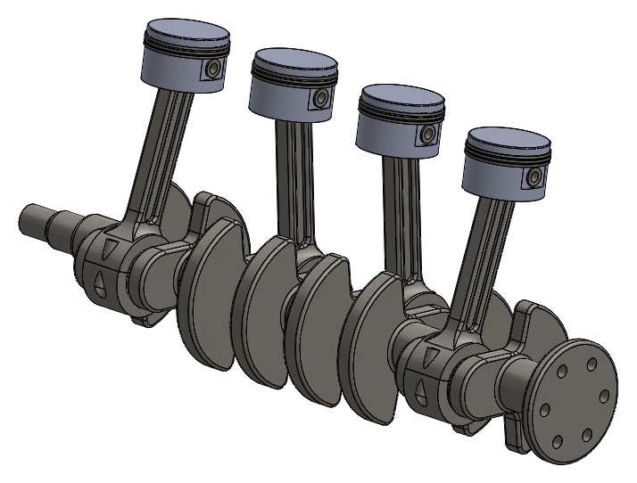
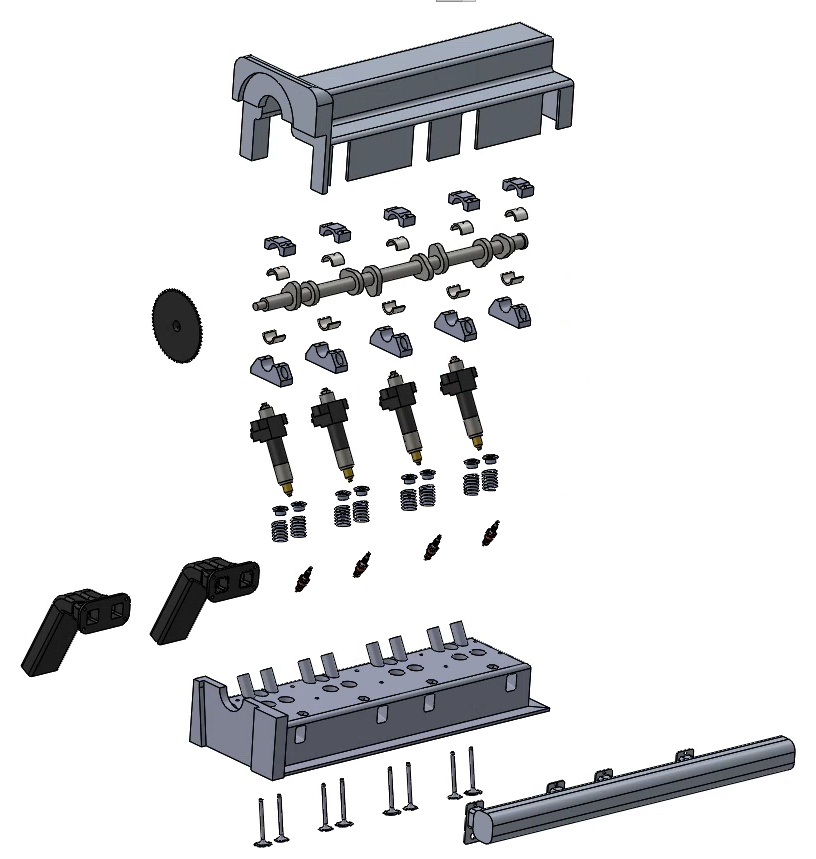
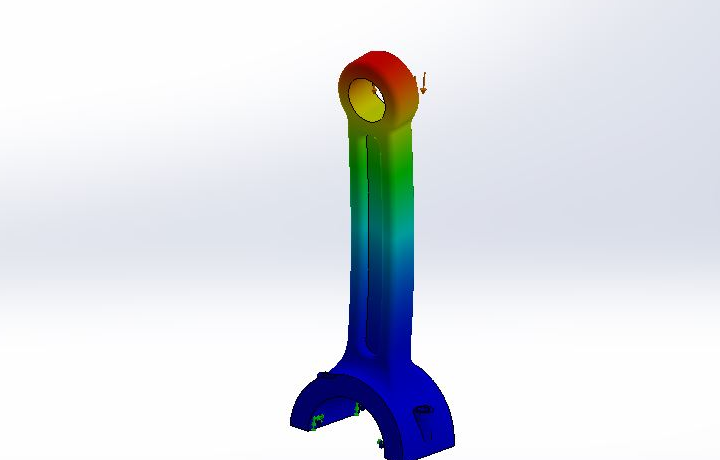
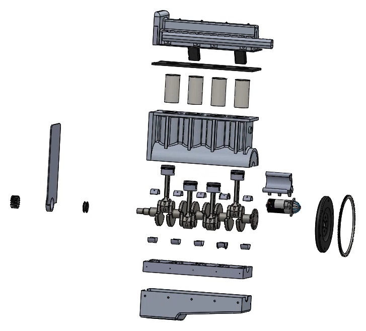

Case Western Reserve University, 2017 · Team lead, piston design, materials and manufacturing
A 1.6 L motorcycle engine that eleven of us designed from a blank page in one semester for our senior capstone. I led the team, designed the piston, and picked how every part we designed would be made.

| Engine | Inline-4, 1600 cc, 10:1 compression, single overhead cam with 2 valves per cylinder, direct injection, liquid cooled |
|---|---|
| Operating range | 800 rpm idle, 5000 rpm all day, 6500 rpm redline. |
| Tools | SolidWorks for CAD, FEA and file control, Matlab for the combustion, torque and cam models, CES EduPack for costing |
| Cost | $4,685 per engine, under the $5,000 ceiling |
TL;DR. Our class was given a fictitious customer who wanted a motorcycle engine. We designed every part of it in CAD, worked out how each one would be manufactured and what it would cost, and checked that nothing would bend, crack or overheat. My part was the piston, the materials for every part, and keeping eleven people on schedule.
The customer wanted a fuel-injected four-stroke between 1500 and 1800 cc. It had to idle at 800 rpm, run all day at 5000, and be built at 7,500 units a year, growing to 15,000. We had sixteen weeks and a $5,000 cost ceiling.
I started from what the crown has to survive, which is peak cylinder pressure pushing on it like a flat plate. Across four alloys the minimum thickness came out between 3.5 and 5.1 mm, so I set it at 6 mm before we had even picked a material. I also designed the three rings and the wrist pin.
The piston is metal injection molded in 420 stainless. Nobody ever sees the inside of a piston, so the gates, sliders and negative draft all go there. Molding holds the outside tighter than a casting, which means less time on the CNC, and it let me add ribs around the pin boss without adding weight. It comes out to about $55 a piston.


The rods are forged 4140 with an I-beam section. They're five times as long as the crank radius, so the piston pushes into the cylinder wall less. The crank is one forged piece of 4340 with the counterweights built in. A flat-crank four cancels its main shaking forces on its own, and under 2 liters the engine mounts can soak up what's left, so we skipped balance shafts.

The aluminum head uses a wedge chamber borrowed from old Ford small blocks, which squeezes the mixture toward the spark plug. Our first valvetrain had rocker arms running 1:1, so they weren't doing anything. We pulled them and put the cam right on the tappets. The block is sand-cast aluminum with pressed-in steel sleeves. Coolant runs past the cylinders one after another, and the head gets its own parallel loop so every cylinder sees the same cool water.

We never got to build it, so everything had to hold up on paper. Step by step:
| Connecting rod | Buckling safety factor of 7.85 by hand and 7.7 in FEA, under a 33.6 kN firing load |
|---|---|
| Crankshaft | Worst stress in the webs at 73.5 MPa. Normalizing the steel raised its fatigue safety factor from 2.6 to 4.4. |
| Valvetrain | Cam pressure angle of 26°, under the 30° limit. Intake flow at Mach 0.40, well short of choking. |
| Flywheel | Sized from Matlab torque curves to hold idle within 5% of 800 rpm |
| Cooling | Cylinder walls kept under 380 K |

The last test was people. We had design reviews in weeks 4, 8 and 15 in front of the professor, the TAs and the class, and every number above had to hold up when somebody asked why - and I had to be the person who defended our decisions as the lead.
We started with a sub-team for each system, and half the team ended up idle every other week. I switched us to action items pulled from each week's deliverable, each one with an owner, a due date and the people it depended on.
